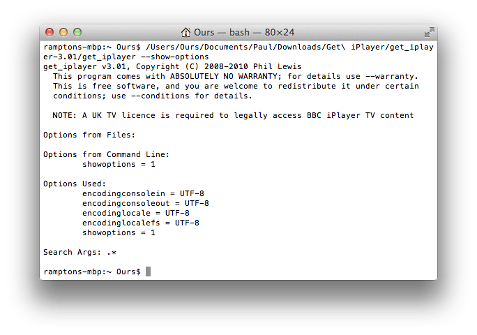
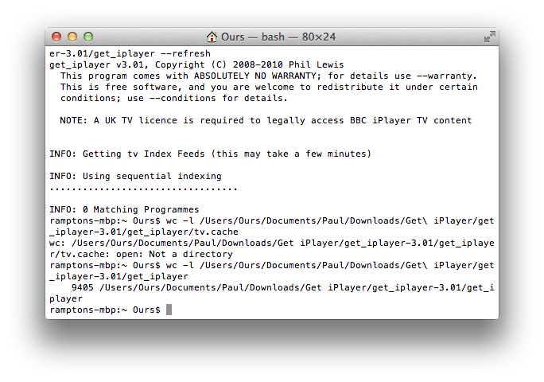
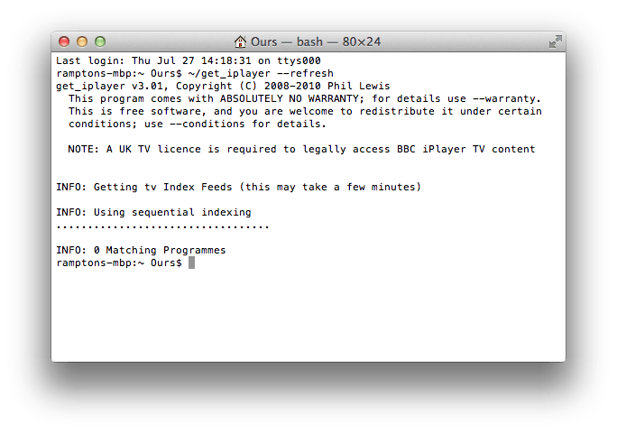
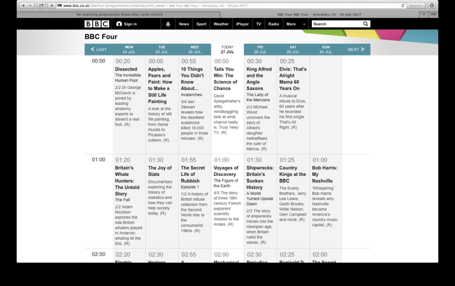

When I initially run the program I get the screen saying:
"INFO: Getting tv Index Feeds (this may take a few minutes)"
"INFO: Using sequential indexing"
Then after a few minutes it says underneath that:
"INFO: 0 Matching Programmes"
"logout"
Normally what used to happen after a few minutes is it would come up with a long list of all programmes available on iPlayer but for some unknown reason now it won't find anything. Can anybody help with this issue?
I have attached a screenshot for info.
Post the output from get_iplayer --show-options.

Have attached the screenshot of you request
Thanks
Thanks. I thought you might have some bogus settings interfering with search, but nothing there. Run just get_iplayer (from a command prompt, not from Finder), which should dump a list of programmes. If not, try an actual search with get_iplayer eastenders. If that doesn't show results, check that your cache file actually has something in it with wc -l $HOME/.get_iplayer/tv.cache. The line count should be four figures. Your earlier post showed the programme data being downloaded (the dots), so something should be there. If nothing there, try an explicit refresh with get_iplayer --refresh and another search. Since you haven't installed Mojolicious to speed up cache updates, you can use --refresh-include="BBC Four" (or similar) to limit the cache update for testing.

I have tried the line count and refresh but still nothing comes up. Here is the screen shot from both. Not sure if I did the line count correctly or not but you can see from these screenshots what I typed.
Thanks. Run get_iplayer --refresh again, then post the output from get_iplayer --verbose eastenders.
Sorry - I didn't look at your screenshot closely enough. You haven't shown that your cache is populated after all. You didn't follow my instructions to check the line count of your cache file. You posted the line count for the get_iplayer script itself, which is pointless.

Ok apologies I have now done what you said and it says the line count is 1.
Thanks. That shows the cache isn't being populated, which is why searches fail. Post the output from get_iplayer --verbose --refresh --refresh-include="BBC Four".
Ok here are the results of those commands.
The VERBOSE command I have pasted below as it is quite long.
get_iplayer Output:
Last login: Thu Jul 27 09:36:51 on ttys000
ramptons-mbp:~ Ours$ ~/get_iplayer --verbose
get_iplayer v3.01, Copyright (C) 2008-2010 Phil Lewis
This program comes with ABSOLUTELY NO WARRANTY; for details use --warranty.
This is free software, and you are welcome to redistribute it under certain
conditions; use --conditions for details.
NOTE: A UK TV licence is required to legally access BBC iPlayer TV content
INFO: encodinglocale = UTF-8
INFO: encodinglocalefs = UTF-8
INFO: encodingconsoleout = UTF-8
INFO: encodingconsolein = UTF-8
INFO: ${^UNICODE} = 0
INFO: User prefs dir: /Users/Ours/.get_iplayer
INFO: System options dir: /etc/get_iplayer/options
Current options:
encodingconsolein = UTF-8
encodingconsoleout = UTF-8
encodinglocale = UTF-8
encodinglocalefs = UTF-8
verbose = 1
ybbcy = 1
INFO: Search args: '.*'
INFO: ffmpeg version string = not found
INFO: ffmpeg version number = unknown
INFO: Got 0 file cache entries for tv
INFO: Getting tv Index Feeds (this may take a few minutes)
INFO: Will refresh channel BBC Alba
INFO: Will refresh channel BBC Four
INFO: Will refresh channel BBC News
INFO: Will refresh channel BBC One
INFO: Will refresh channel BBC One Cambridgeshire
INFO: Will refresh channel BBC One Channel Islands
INFO: Will refresh channel BBC One East
INFO: Will refresh channel BBC One East Midlands
INFO: Will refresh channel BBC One London
INFO: Will refresh channel BBC One North East & Cumbria
INFO: Will refresh channel BBC One North West
INFO: Will refresh channel BBC One Northern Ireland
INFO: Will refresh channel BBC One Northern Ireland
INFO: Will refresh channel BBC One Oxfordshire
INFO: Will refresh channel BBC One Scotland
INFO: Will refresh channel BBC One Scotland
INFO: Will refresh channel BBC One South
INFO: Will refresh channel BBC One South East
INFO: Will refresh channel BBC One South West
INFO: Will refresh channel BBC One Wales
INFO: Will refresh channel BBC One Wales
INFO: Will refresh channel BBC One West
INFO: Will refresh channel BBC One West Midlands
INFO: Will refresh channel BBC One Yorks & Lincs
INFO: Will refresh channel BBC One Yorkshire
INFO: Will refresh channel BBC Parliament
INFO: Will refresh channel BBC Two
INFO: Will refresh channel BBC Two England
INFO: Will refresh channel BBC Two Northern Ireland
INFO: Will refresh channel BBC Two Scotland
INFO: Will refresh channel BBC Two Wales
INFO: Will refresh channel CBBC
INFO: Will refresh channel CBeebies
INFO: Will refresh channel S4C
INFO: Using sequential indexing
DEBUG: Getting feed http://www.bbc.co.uk/bbcalba/programmes/.../this_week
INFO: Getting page http://www.bbc.co.uk/bbcalba/programmes/.../this_week
.
INFO: Got 0 programmes for BBC Alba
DEBUG: Getting feed http://www.bbc.co.uk/bbcfour/programmes/.../this_week
INFO: Getting page http://www.bbc.co.uk/bbcfour/programmes/.../this_week
.
INFO: Got 0 programmes for BBC Four
DEBUG: Getting feed http://www.bbc.co.uk/bbcnews/programmes/.../this_week
INFO: Getting page http://www.bbc.co.uk/bbcnews/programmes/.../this_week
.
EDIT: excess spew removed


(27-07-2017, 02:34 PM)Ok here are the results of those commands.
The VERBOSE command I have pasted below as it is quite long.
That's why I gave you a command that wouldn't produce so much output. If you won't follow my instructions, especially when I give you commands to copy and paste, we're not going to make much progress.
The output suggests you're not actually receiving schedule data used to update the cache. Load this in your browser and post a screenshot of the result:
http://www.bbc.co.uk/bbcfour/programmes/.../this_week

The link shows the following web page
That is the expected result, so problem is isolated to get_iplayer. What version of macOS are you using?
That's the problem. There is a bug in one of the Perl modules on 10.9. It's possible to make get_iplayer work on 10.9 by upgrading that module (see manual installation info in macOS install doc in wiki), but I'm afraid I won't help you with that if you run into problems. As the doc makes clear, I only support 10.10+.
Ok I may have a look into that.
However I have just tried downloading something and it actually works. I can use the iPlayer website to get the info (either URL or the PID) and just use the --PID= or --URL command to start the download as you see below. Even thought the cache is empty, is this normal and ok to do or do you think there are problems doing that?
Last login: Thu Jul 27 18:59:10 on ttys000
ramptons-mbp:~ Ours$ ~/get_iplayer --pid=b08zf78h
get_iplayer v3.01, Copyright (C) 2008-2010 Phil Lewis
This program comes with ABSOLUTELY NO WARRANTY; for details use --warranty.
This is free software, and you are welcome to redistribute it under certain
conditions; use --conditions for details.
NOTE: A UK TV licence is required to legally access BBC iPlayer TV content
INFO: Episode PID detected
INFO: Trying pid: b08zf78h using type: tv
INFO: Trying to download PID using type tv
INFO: pid not found in tv cache
Matches:
INFO: 1 Matching Programmes
INFO: Checking existence of original version
INFO: hlshd1,hvfxsd1,hvfxsd2,hvfxsd3,hvfxsd4,hvfxsd5,hvfxsd6,dvfxsd1,dvfxsd2,hlsvhigh1,hvfxhigh1,hvfxhigh2,hvfxhigh3,dvfxhigh1,dvfxhigh2,hvflow1,hvflow2,hvflow3,dvflow1,dvflow2 modes will be tried for version original
INFO: Trying hlshd1 mode to record tv: Officially Amazing: Goes Bunkers - 11. Marble Moving, Horseboard Slaloming, Tennis Tricking
WARNING: Required ffmpeg utility not found - not converting .ts file
INFO: File name prefix = Officially_Amazing_Goes_Bunkers_-_11._Marble_Moving_Horseboard_Slaloming_Tennis_Tricking_b08zf78h_original
INFO: Begin recording file: /Users/Ours/Officially_Amazing_Goes_Bunkers_-_11._Marble_Moving_Horseboard_Slaloming_Tennis_Tricking_b08zf78h_original.video.ts
INFO: Begin recording at: 0.00 MiB (00:00:00) [1]
Recording: 47.28 MiB / ~496.71 MiB 9.5% 14.5 Mibit/s 00:04:07 remaining
That is normal. You don't need the cache to download via PID or URL.
{kind=link}
{kind=link}
{kind=link}
{kind=link}
{kind=link}
{kind=link}